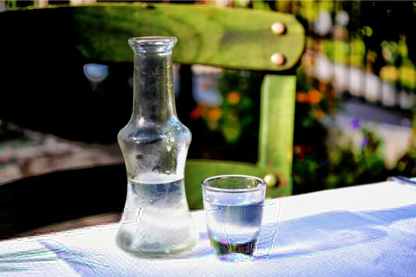
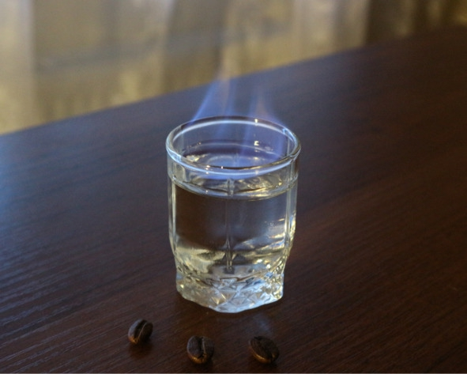
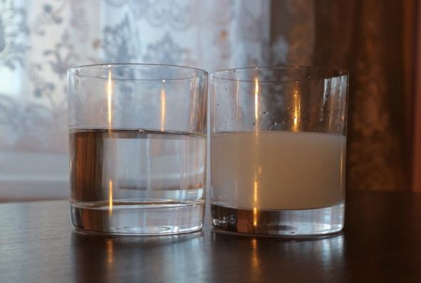

Понятие и виды самбуки
Sambuca («Самбука») – ликер крепостью 38—42% об. с характерным анисовым ароматом и вкусом, изготавливаемый из пшеничного спирта, звездчатого или обычного аниса, сахара, вытяжки ягод и цветов бузины, других ароматных трав и специй. Традиционная страна производства – Италия. Единого рецепта не существует, у каждого производителя свой набор составляющих и пропорции.
Сначала анис, бузину и другие ингредиенты замачивают в спирте, затем полученную настойку дистиллируют два-три раза, разбавляют сахарным сиропом, иногда добавляют ягодные, фруктовые и цветочные экстракты. Затем напиток оставляют в покое на пару недель, фильтруют и разливают в бутылки.
Ассортимент анисовых ликеров не настолько широк, как, например, виски или вина. В зависимости от цвета выделяют три вида самбуки:
– белая (прозрачная) – традиционный вариант. Обычно готовится по классической рецептуре без добавления других ингредиентов;
– черная – имеет темно-синий цвет, который достигается путем добавления в состав лакрицы или экстракта солодки. Вкус черной самбуки считается самым утонченным;
– красная – отличается ярко-красным оттенком, который получают внесением вытяжек из ягод и фруктов. После глотка такой самбуки во рту ощущается фруктовое послевкусие.
История появления самбукиПо легенде, напиток попал в Европу от сарацинов, на что намекает откровенно арабское звучание самого названия. Впрочем, точное происхождение слова sambuca неизвестно, на этот счет есть несколько версий:
– от латинского Sambucus Nigra – «бузина черная». Учитывая, что этот ингредиент может входить в состав напитка, версия кажется вполне правдоподобной, так считают и составители оксфордского словаря, однако крупнейший производитель самбуки, компания Molinari, опровергает такую трактовку названия, поскольку не использует бузину в рецептуре;
– от арабского слова zammut – «анис». Восточный напиток, на основе которого затем была создана самбука, назывался «заммут»;
– от типа арабских кораблей, на которых анисовые ликеры транспортировали в Рим.
Происхождение самбуки тесно связано с аптекарским делом – напиток появился из целебных травяных сборов и лекарственных препаратов. Изначально анисовую настойку с разнообразными добавками принимали исключительно в медицинских целях, затем стали пить после еды для улучшения пищеварения, а уже потом самбуку начали покупать для застолий.
Пока точно не установлено, как обыкновенная анисовка «эволюционировала» до самбуки. Есть легенда, будто один крестьянин случайно уронил в настойку цветы и ягоды черной бузины. Напиток был испорчен, поэтому рачительный хозяин отложил его подальше, чтобы позже использовать в хозяйственных целях. Через какое-то время на свадьбе дочери закончился весь алкоголь, и крестьянин достал бракованную анисовку, надеясь, что подвыпившие гости не заметят разницы. Однако участники застолья не только почувствовали новый вкус, но и оценили его по достоинству – так и появилась самбука.
Официальная история самбуки началась в 1851 году, когда Луиджи Манци из Чивитавеккьи выпустил первый алкогольный напиток с таким названием – Sambuca MANZI di Civitavecchia. Впрочем, до промышленного производства было еще далеко – оно началось только в 1945 году, и тоже благодаря итальянцу. Анжело Молинари разработал собственную оригинальную рецептуру самбуки, основал компанию по производству нового напитка, а со временем и «захватил мир» – сегодня Molinari принадлежит 70% рынка самбуки в Италии.
Как пить самбуку1. По-итальянски («с мухами»). Классический вариант подачи. «Мухами» называют три кофейных зернышка, которые символизируют здоровье, богатство и счастье. Понадобятся самбука, два бокала (желательно коньячных), кофейные зерна, трубочки, бумажные салфетки и спички (зажигалка).
Инструкция: в первый бокал бросить три кофейных зернышка и налить 50—70 мл самбуки. Далее в центре бумажной салфетки сделать отверстие, вставив в него коктейльную трубочку коротким концом. Чтобы не запачкать стол, желательно поставить эту конструкцию на небольшое блюдце. Поджечь самбуку спичкой или зажигалкой. Благодаря высокой крепости ликер легко воспламеняется. Самбука должна гореть синим пламенем 5—10 секунд. Затем перелить пылающий напиток во второй бокал, а первым накрыть сверху. Когда огонь погаснет, первый бокал, в котором собрались пары, аккуратно перенести на салфетку. Сначала залпом выпить самбуку, задержав кофейные зерна во рту, затем через трубочку сделать несколько глубоких вдохов и разжевать кофе.
2. В чистом виде. Прежде чем пить самбуку в чистом виде, напиток следует хорошо охладить, поставив бутылку на 15—20 минут морозильную камеру. Как и большинство сладких ликеров, итальянская анисовка хорошо сочетается с солоноватыми сырами, рыбной закуской, разнообразными маринадами: оливками, соленьями. Очень хорошо идут под самбуку орехи и сладкое: разнообразные десерты, мороженое, сочные фрукты.
3. Горящая стопка. Любимый способ многих русских, так как требует минимум телодвижений и чем-то напоминает культуру употребления водки. Достаточно налить самбуку в стопку, поджечь и дать напитку погореть 5—8 секунд. Далее погасить ликер одним сильным выдохом и выпить залпом, пока он горячий.

Если самбука будет гореть слишком долго, стопка сильно нагреется и её будет сложно взять в руку
4. С минералкой. В жару можно пить самбуку, разбавленную холодной минеральной водой в пропорции 1:2 или 1:3 (одна часть ликера к двум-трем частям минералки). Пряный травяной вкус «анисовки» не теряется, а только становится изысканнее и тоньше.

Чистая и разбавленная водой самбука
Сразу после добавления воды самбука мутнеет. Это нормально и не влияет на вкус. Все дело в большой концентрации эфирных масел аниса, плохо растворяющихся в воде.
5. С молоком. Некоторым ценителям нравится запивать самбуку свежим холодным молоком минимальной жирности. Молоко можно заменить густыми сливками (не смешивать, а запивать), также в сливки добавляют сахар по вкусу.
6. С чаем и кофе. Добавить ликер в чашку эспрессо (пропорции 1:4) либо влить самбуку в чашечку «эрл грея» или обычного черного байхового. Получится согревающий напиток, придающий сил и повышающий жизненный тонус.
7. Разбавляя соками. Подойдет любой цитрусовый (апельсиновый, грейпфрутовый или лимонный) или ягодный сок. Пропорции: три-четыре части сока к одной части ликера.
Популярные коктейли с самбукой Hiroshima («Хиросима»)Внешним видом напоминает ядерный взрыв. Это классический шот – алкогольный коктейль, который подают в рюмке и выпивают залпом.
Состав:
– самбука – 20 мл;
– абсент – 20 мл;
– ликер «Бейлис» – 20 мл;
– гранатовый сироп гренадин – 5 мл.
Рецепт: налить в рюмку самбуку. Аккуратно по ложечке добавить ликер «Бейлис». Важно, чтобы слои не смешивались. По ложечке сверху налить абсент. Посередине рюмки добавить несколько капель гранатового сиропа. Его плотность намного выше, чем у других составляющих, вследствие чего гренадин с легкостью пробивает все три слоя, образуя визуальный эффект, напоминающий взрыв.
Freddy Krueger («Фредди Крюгер»)Коктейль с вишнево-молочным вкусом и ароматом аниса.
Состав:
– водка – 30 мл;
– самбука – 60 мл;
– молоко – 70 мл;
– вишневый сироп – 20 мл.
Рецепт: смешать все ингредиенты в шейкере, смесь перелить в бокал для мартини. Украсить коктейль вишенкой или тонким слоем лимонной кожуры.
Cocoon («Кокон»)Один из самых простых коктейлей с легкодоступными ингредиентами. Хорошо освежает в жаркие дни.
Состав:
– самбука – 50 мл;
– «Кока-Кола» («Пепси») – 150 мл;
– лимонный сок – 20 мл;
– кубики льда.
Рецепт: наполнить стакан льдом, добавить самбуку, сок и колу. Перемешать. Пить через трубочку.
Cheerful Frenchman («Веселый француз»)Оригинальное сочетание самбуки с шампанским. Получается в меру крепкий коктейль с запоминающимся кисло-сладким вкусом.
Состав:
– шампанское (любое игристое вино) – 100 мл;
– самбука – 10 мл;
– водка – 10 мл;
– лимонный сок – 10 мл;
– несколько ягод винограда;
– кубики льда.
Рецепт: раздавить виноград, добавить ягоды в бокал с несколькими кубиками льда. Смешать в шейкере водку, самбуку и сок. Перелить содержимое шейкера в бокал. На последнем этапе долить шампанское. Украсить коктейль веточкой винограда.
Liquid Nitrogen («Жидкий азот»)Несмотря на грозное название, это «мирный» коктейль со сладким вкусом и умеренной крепостью.
Состав:
– самбука – 80 мл;
– кокосовое молоко – 60 мл;
– сливочное мороженое – 100 г.
Рецепт: растопить мороженое и перелить в шейкер. Туда же добавить самбуку с кокосовым молоком. Перемешать, затем перелить коктейль в высокий бокал. Поставить напиток в холодильник на 10—15 минут. Украсить кусочком ананаса и вишенкой.
Известные марки самбуки Molinari Extra («Молинари Экстра»)Molinari Extra – самая популярная самбука в мире. Ее создателя, Анжело Молинари, пресса называла «Королем самбуки». Впоследствии этот неофициальный титул унаследовали его дети и внуки. Сегодня компания Molinari производит более 10 млн бутылок самбуки в год и экспортирует напиток в 70 стран.
Анжело Молинари родился в 1893 году в Риме. В юности работал в компании, занимавшейся поставками итальянских вин и ликеров в Эфиопию, затем открыл собственный бар в Аддис-Абебе. В конце 1935 года началась итало-эфиопская война, и семья Молинари была вынуждена вернуться на родину. В 1936 году синьор Анжело устроился на работу в знаменитую компанию Manzi. Ее завод, производивший самбуку, располагался в городе Чивитавеккья. Анжело Молинари в совершенстве освоил все секреты изготовления фирменного анисового ликера Manzi, рецепт которого оставался неизменным с XIX века. Но этот напиток казался синьору Анжело чересчур сухим, а ему хотелось создать идеальную самбуку. В 1945 году он зарегистрировал фирму Molinari. Ни о каких наемных работниках, как и о заводском здании, и речи не могло быть: самбуку, лимончелло и другие ликеры Молинари изготавливал в сарае, а помогали ему два сына и дочь.
Качественный и умело разрекламированный напиток приобрел такую популярность, что в 1959 году Молинари построил автоматизированный ликеро-водочный завод. Спрос на самбуку постоянно рос, и уже в 1964 году открылось второе предприятие компании, а в 1975 году – третье. В 1971 году объем производства напитка превысил 3 млн бутылок. В 1975 году Анжело Молинари умер, завещав фирму детям: Марчелло, Антонио и Мафальде. Синьор Анжело считал пьянство злом. Он утверждал, что людям необходимо прививать культуру употребления алкоголя.
Manzi («Манци»)Самбука Manzi – бесцветный прозрачный ликер крепостью 42% с приятным анисовым ароматом. Из всех популярных марок «Манци» обладает наиболее сухим вкусом. Это настоящая легенда, которую стоит попробовать уже хотя бы ради того, чтобы знать, каков был вкус самого первого анисового ликера, с которого более 160 лет назад и началась история этого напитка.
Рецепт создал борец за объединение Италии Луиджи Манци. С самбукой этой марки до сих пор связано несколько загадок. К примеру, сам создатель рецепта писал, что назвал напиток в честь «самбучелло» – разносчиков анисовой воды. Но существует легенда, что в одном из складских помещений дистиллерии Manzi, находившемся непосредственно над портом, в полу было закрытое люком отверстие. Сквозь него рабочие переносили спиртное прямо в лодки контрабандистов. Подобный способ отгрузки готовой продукции давал возможность не платить налоги и приносил синьору Луиджи такие доходы, что он в шутку прозвал лаз в полу «святой дырой» – santa buca. Причем налоги Манци не платил принципиально: вместо этого он жертвовал огромные суммы на организацию патриотических подпольных кружков и подготовку революции Джузеппе Гарибальди. Другая загадка – рецепт или хотя бы перечень ингредиентов самбуки Manzi. Синьор Луиджи всегда говорил, что в ней не содержится экстракта цветов бузины. Косвенно это подтверждается записями купажиста: хорошо знакомый с особенностями растений, Манци при описании самбуки ни разу не упомянул целебных свойств, присущих бузине.
После Второй мировой войны наступил расцвет компании Molinari и упадок Manzi. Постоянные ссоры между наследниками, огромные невыплаченные кредиты привели к тому, что в середине 80-х годов XX века Эрминио Риччи, последний владелец Manzi, просто сдал патент на производство самбуки в городской совет Чивитавеккья. Разоренную компанию выкупил Марчелло Молинари – сын основателя бренда синьора Анжело. Так же, как и для Луиджи Манци, для Молинари самбука была не просто источником прибыли, а частью истории родной страны. С тех пор и до наших дней самбуку Manzi выпускает компания Molinari.
Antica («Антика»)«Антика» – одна из самых популярных самбук в мире: по объему продаж марка уступает лишь бренду Molinari. Это лидер английского рынка самбуки: только в Великобританию ежегодно поставляется 1,5 млн бутылок. Еще 2 млн компания экспортирует в США и Латинскую Америку. Рекламным девизом бренда являются слова президента компании: «Рождена, чтобы стать первой». Самбука названа в честь города Виченца, основанного в античные времена.
Рецепты всех видов самбуки «Антика» в конце XX века разработал Франческо Дель Тосо – купажист крепкого спиртного и бизнесмен, владеющий несколькими винокурнями. Antiche Distillerie Riunite стала первой компанией, выпустившей цветные самбуки с добавлением различных фруктовых экстрактов и специй, что обеспечило успех на рынке.
Luxardo («Люксардо»)Самбуку «Люксардо» экспортируют в 70 стран, наиболее популярен напиток в Англии, США, Канаде и Японии. Компания спонсирует международный конкурс барменов Luxardo Coctail Cup, который ежегодно проводится в США. На конкурсе определяется лучший коктейль, состоящий из напитков Luxardo.
Фирму в 1821 году основал Джироламо Люксардо – консул Сардинского королевства, работавший в венецианском городе Задар. При жизни основателя компания выпускала только вишневый ликер. Рецепт самбуки купажисты Luxardo Distillerie создали во второй половине XIX века. Новый анисовый ликер назвали Luxardo Sambuca dei Cesari, в честь Юлия Цезаря. Со временем в ассортименте появились и другие виды самбуки. С момента основания компания находится в полной собственности одной семьи. Продукция дома Luxardo не содержит искусственных добавок, а для изготовления ликеров используется только лучшее сырье. После того как самбука была признана кошерной, объемы реализации значительно возросли.
Madruzzo («Мадруццо»)Мадруццо – один из самых прекрасных замков в Италии, бывшая резиденция епископов Тронто. Давая самбуке имя старинной крепости, создатели хотели подчеркнуть верность традициям: чистый и мягкий вкус напитка соответствует самым высоким стандартам. Бренд Madruzzo принадлежит немецкой группе компаний Metro, которая владеет супермаркетами в Европе, Азии и Африке. Поэтому с самбукой «Мадруццо» уже познакомились жители 31 государства.
Производит самбуку «Мадруццо» компания Distillerie Sari, которая заключила несколько контрактов на поставку спиртных напитков крупным европейским торговым сетям. В частности, для сети супермаркетов Metro Group завод изготавливает целую линейку продуктов под брендом Madruzzo: самбуку, мараскино, амаретто, лимончелло, граппу.
Аналоги самбуки: узо, пастис, арак (ракы) УзоУзо (греч. ????, англ. ouzo) – смесь дистиллята из виноградных выжимок и чистого этилового (зернового) спирта крепостью 40—50% об., настоянная на анисе и других ароматических травах: гвоздике, миндале, ромашке, шпинате, кориандре, фенхеле и других, которая после нескольких месяцев выдержки перегоняется повторно. Напиток обладает мягким сбалансированным вкусом с выраженными нотками аниса и трав, напоминающими итальянскую самбуку.
У каждого производителя узо своя оригинальная рецептура, технология и набор трав. Греческое законодательство обязывает придерживаться лишь двух правил: минимум 20% алкогольной основы должен составлять винный спирт (из жмыха или сока), анис в составе обязателен.
Напитки наподобие узо (настойки винного спирта на травах) появись в византийскую эпоху. Их пили по всей территории Оттоманской империи. В XIV веке эти рецепты были популярны даже среди монахов, живших на горе Афон. По преданию именно монахи первыми начали добавлять в состав анис, который в Греции называют словом ????. Окончательно технология производства узо сформировалась в XIX, после того как Греция обрела независимость. Центрами производства стали остров Лесбос, города Тирнавос и Каламата. В 1989 году название «узо» стало защищаться по региональному принципу, его могут использовать лишь производители, находящиеся на территории страны.
Как пить узо:
1. В чистом виде. В Греции этот способ называется Sketo. Оптимальная температура подачи узо – 18—23° C. Анисовую водку наливают в рюмки объемом 50—100 мл и пьют маленькими глотками, улавливая оттенки вкуса. Напиток возбуждает аппетит, поэтому является отличным аперитивом. У греков принято закусывать узо морепродуктами и легкими салатами, но он также хорошо сочетается с мясными блюдами, сырами, фруктами (виноградом, цитрусовыми, яблоками), маслинами, сладким десертом и крепким заварным кофе.
2. Разбавленным водой. Традиционный греческий способ во время застолья. Для снижения крепости узо разбавляют холодной водой. В большинстве случаев используется пропорция 1:1. После добавления воды напиток быстро мутнеет и становится белым. Разбавленный узо мягче на вкус, и пить его проще. Смешивать узо с другими напитками, например соками или спиртным, не принято.
3. Со льдом. Чтобы перебить ярко выраженный вкус аниса, в бокал с узо добавляют несколько кубиков льда. Альтернативный вариант – наливать хорошо охлажденный напиток. Согреваясь во рту, узо меняет вкусовые оттенки.
ПастисПастис (фр. pastis, ударение на второй слог) – это французская настойка на спирте крепостью 38—45% об., в состав которой обязательно входят анис и лакрица. Напиток может содержать другие травы и специи (более 50 наименований), но не полынь. У каждого производителя свой рецепт, хранящийся в секрете. Пастис очень популярен во Франции, Бельгии и Люксембурге. Хранить анисовую настойку нужно в темном прохладном месте, но не в холодильнике, иначе эфирные масла аниса кристаллизуются и выпадут в осадок.
По поводу появления названия pastis есть несколько основных версий. Первая – на старофранцузском языке слово pastis означало «мутный», «грязный», «непрозрачный» – при разбавлении водой настойка принимает молочно-белый оттенок. По другой версии, pastiche на прованском диалекте значит «смесь», «микстура» (лакрица, анис и другие пряности часто являются базовыми компонентами различных лекарств, так что на вкус пастис действительно некоторым напоминает средство от кашля).
Официальной датой появления пастиса принято считать 1915 год – до этого напиток существовал в самодельных вариациях. Несмотря на общее название, можно говорить не об одном напитке, а о разрозненном ряде рецептов, объединенных только парой общих ингредиентов.
Как пить пастис. Пастис используют, во-первых, как аперитив, чтобы разжечь аппетит перед обильной трапезой. Входящий в состав анис улучшает пищеварение и снимает желудочные боли. Кроме того, напиток хорош и в роли дижестива, его пьют как после застолья, так и перед сном или даже между приемами пищи. Закусывать пастис можно любыми блюдами, считается, что он идеально сочетается с рыбой, например с тунцом в оливковом масле.
Пастис традиционно принято смешивать с ледяной водой в пропорции 1:5. Вместо воды можно добавить сок или сироп, а также подсластить обычным сахаром через абсентную ложечку: на специальную чайную ложку с дырками кладут кусочек рафинада и поливают сверху водой, получившийся раствор сразу стекает в анисовый настой.
Арак (Ракы)Арак (арака, араки, архи, арики, ракы) – это группа спиртных напитков крепостью 40—60% об., являющихся настойкой дистиллята (продукта перегонки забродившего сырья) на анисе. Чаще всего напиток имеет желтый, золотистый, белый или прозрачный цвет. Арак широко распространен на Ближнем Востоке, в Центральной Азии и на Балканах.
С арабского языка «арак» переводится как «пот» или «потеть». Имеется в виду процедура перегонки браги, во время которой готовый дистиллят каплями стекает в емкость по продолговатому горлышку. Арак появился около 300 лет назад на Востоке. По одной из версий, его придумали в Ираке, после чего торговцы распространили напиток по всему миру. Согласно другой версии, арак привезли с собой на захваченные земли монгольские воины Чингисхана.
Технология производства. Алкогольная основа настойки зависит от региона производства. В Монголии используется кумыс (перебродившее молоко кобылы сначала перегоняют на дистиллят, затем настаивают на анисе). В Юго-Восточной Азии арак делают из сока кокосовой пальмы, риса, тростника, фиников, инжира. В Турции и Ливане дистиллят получают из виноградных выжимок, оставшихся после приготовления вина. На Балканах популярен арак из слив и других фруктов.
После того как сырье перебродит, его трижды перегоняют, затем добавляют анис (бадьян) и настаивают в дубовых бочках или бутылках с длинным узким горлышком. Иногда в состав добавляются другие ингредиенты, например, травы или семена растений, мед, специи. В каждом регионе есть свои особенности.
Как пить арак. На Востоке арак принято разбавлять холодной водой без газа в пропорции 1:2 (одна часть настойки к двум частям воды). Из-за реакции эфирных масел аниса с водой напиток сразу белеет, поэтому в арабском мире его еще называют «молоком льва». Иногда производители продают уже разбавленный арак, который изначально белый.
Арак правильно пить во время приема пищи, обильно закусывая острыми ароматными блюдами ближневосточной кухни. В некоторых странах в качестве закуски еще подают орехи, фрукты или добавляют по несколько капель напитка в кофе.